ACUPUNCTURE
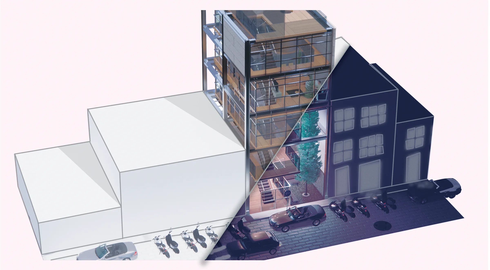
Malé has become a monotonous concrete jungle, choked by unchecked development that strains infrastructure and erodes local identity. This project embraces “Acupuncture” as an approach to revitalization, focusing not on sweeping change, but on precise, strategic interventions.
This building acts as one such “acupuncture point,” designed to alleviate identified urban ailments and inject vitality. It introduces a ground-level printshop and co-working space, vital for nearby academic institutions, complemented by a wellness floor and duplex residences to diversify the urban offering.
Constructed with an efficient steel structure for rapid, low-impact assembly, it incorporates a rear vertical void for natural ventilation. Beyond its footprint, the building actively addresses local deficiencies by illuminating the poorly-lit streetscape and integrating a soak tank to mitigate street flooding, demonstrating how targeted design can mend and enliven its urban context.
Core Concept Visualized
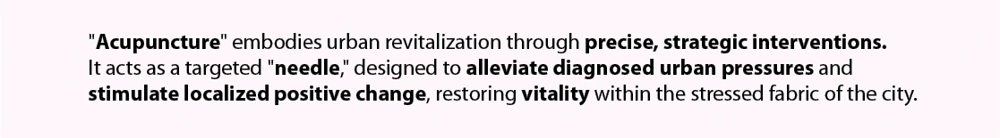
Context & Problem
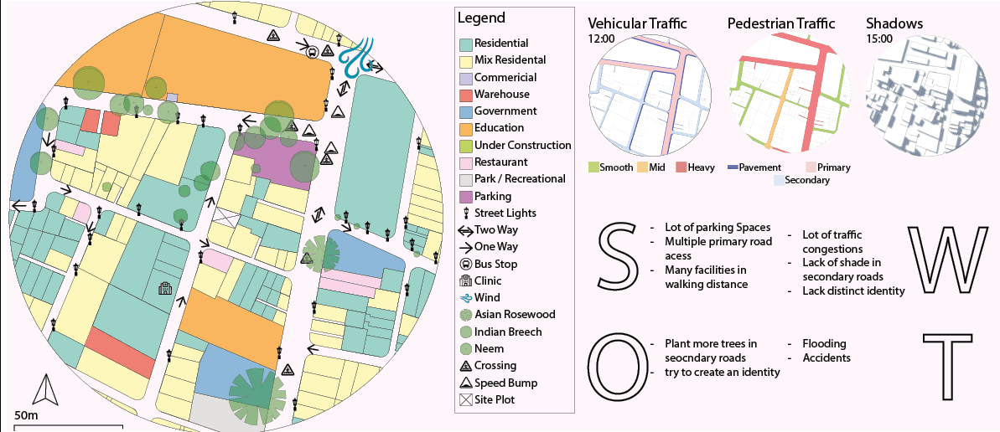
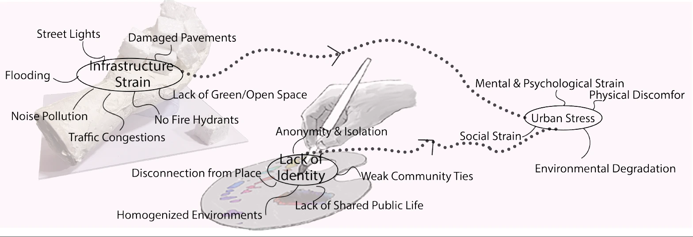
Concept Development
Programming
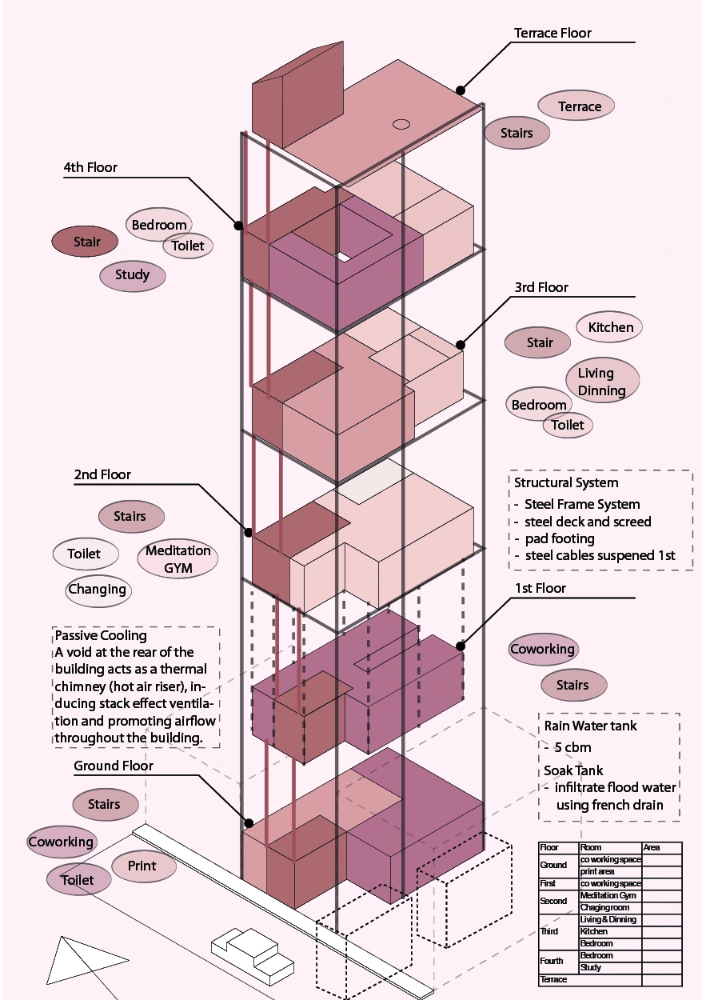
Parti & Massing
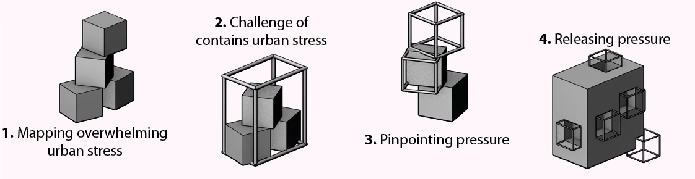
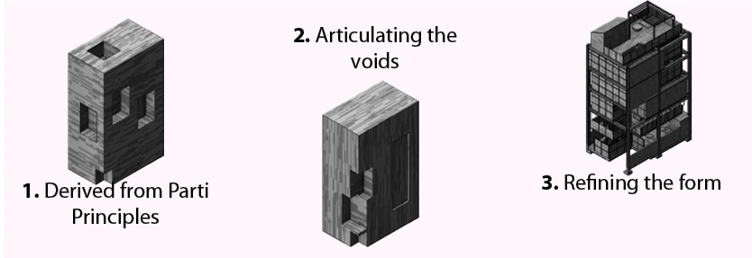
Building Representation
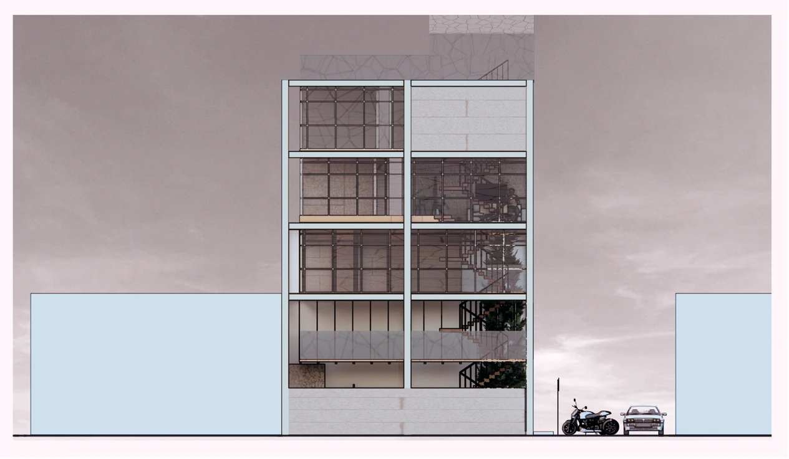
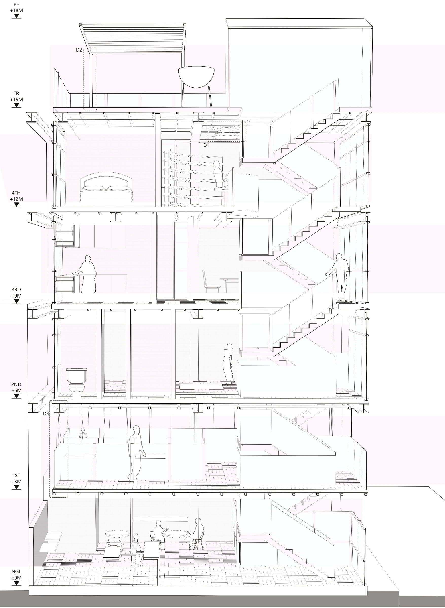
Floor by Floor
Entrance & Ground Floor
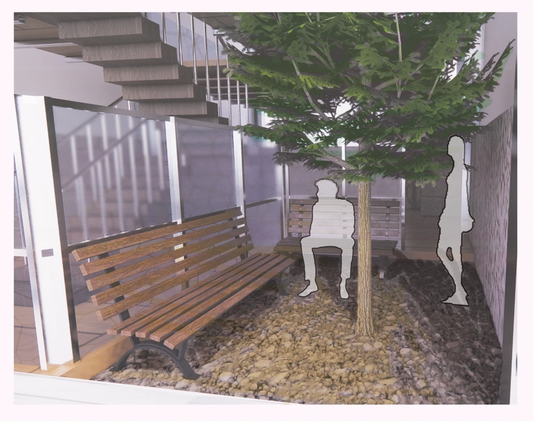
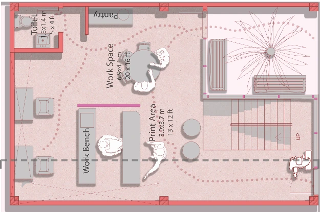
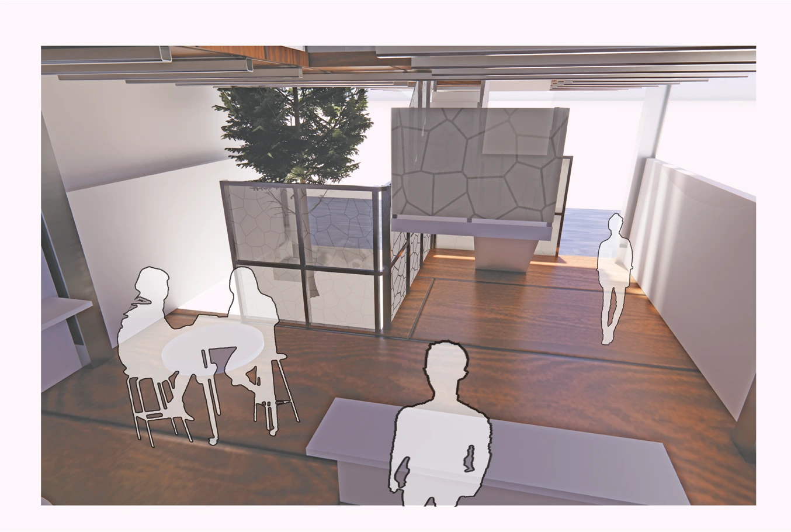
First Floor
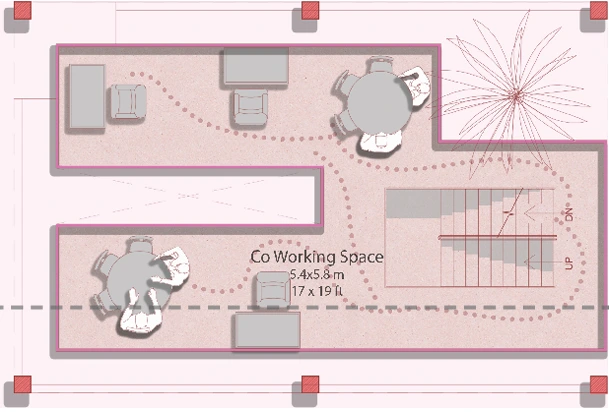
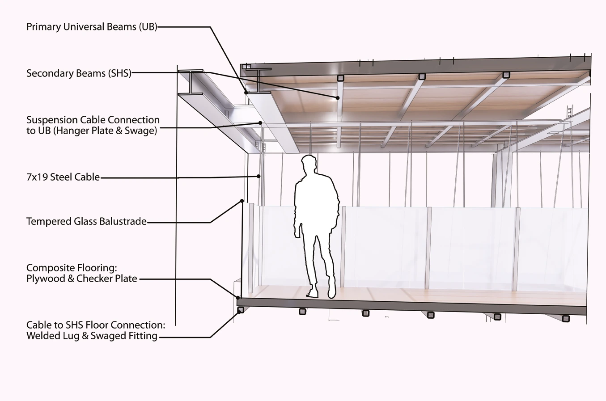
Second Floor
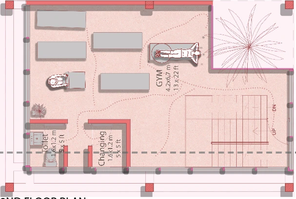
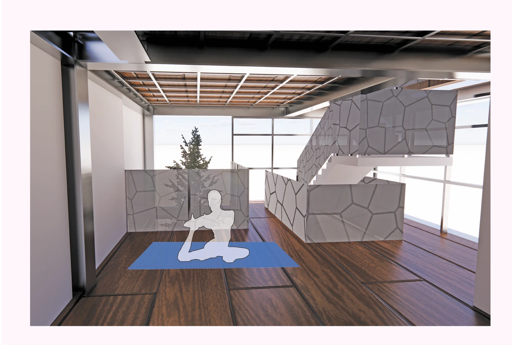
Third Floor
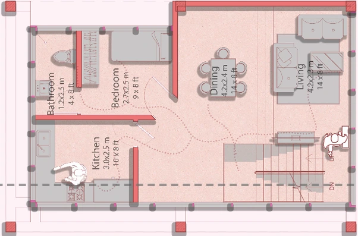
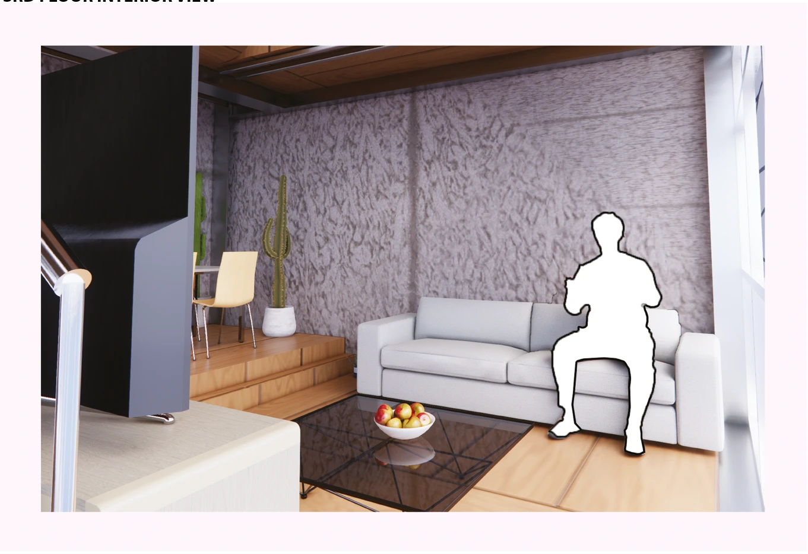
Fourth Floor
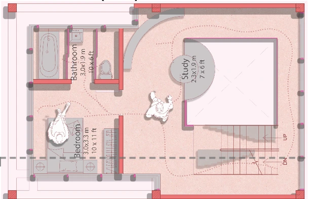
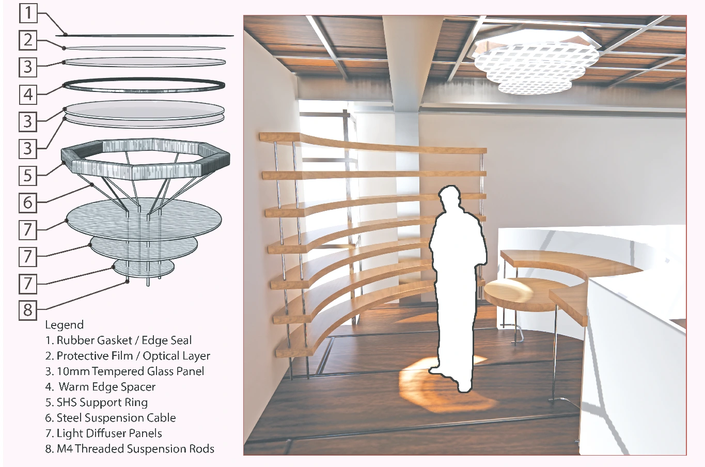
Fifth Floor & Terrace
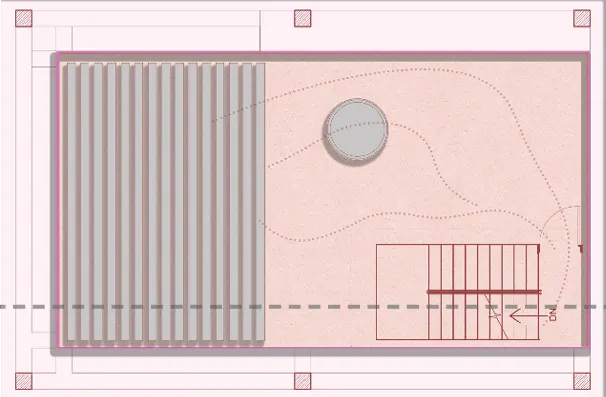
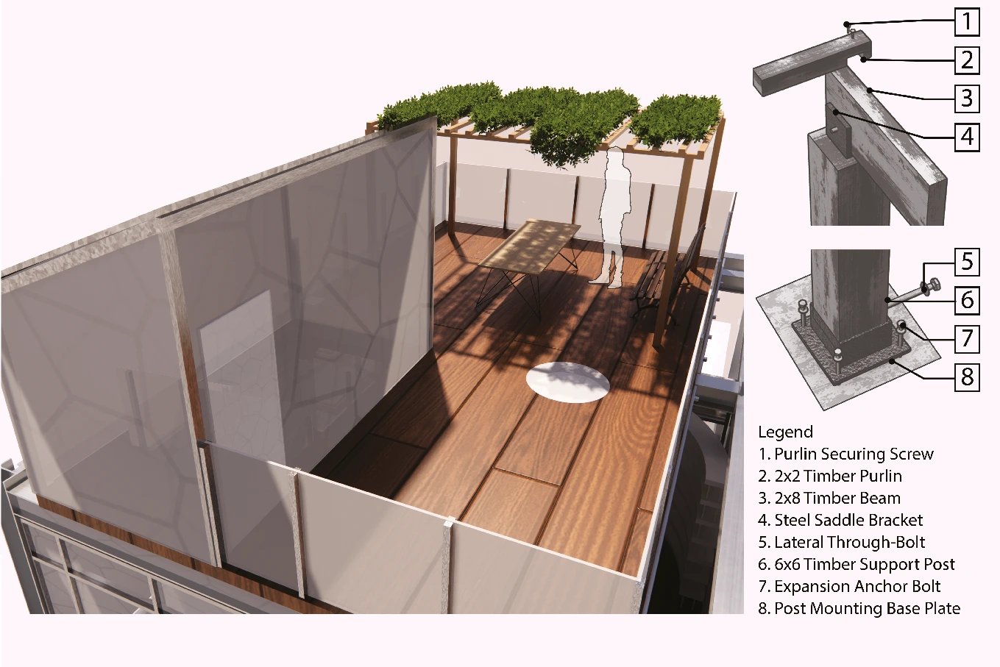
Precedent Studies
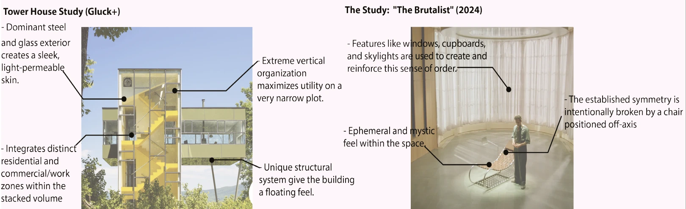